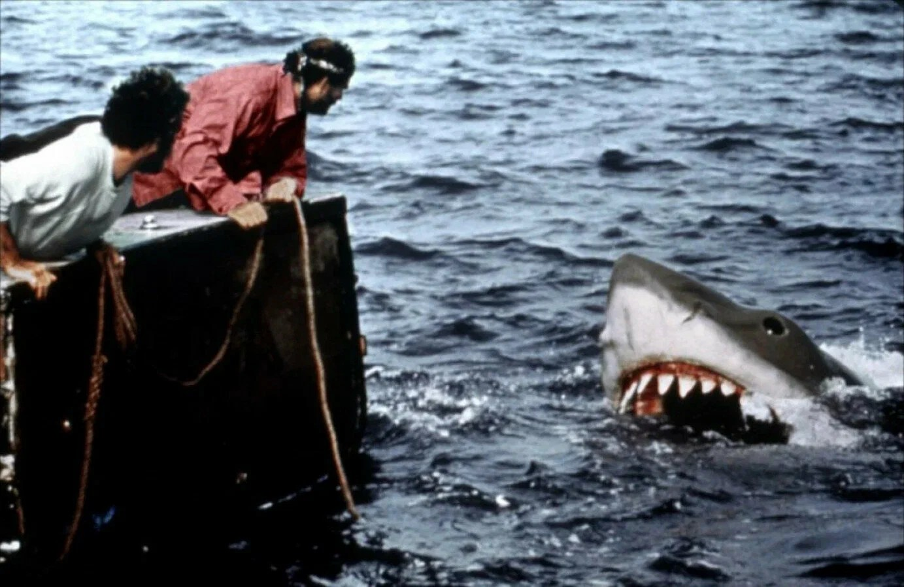
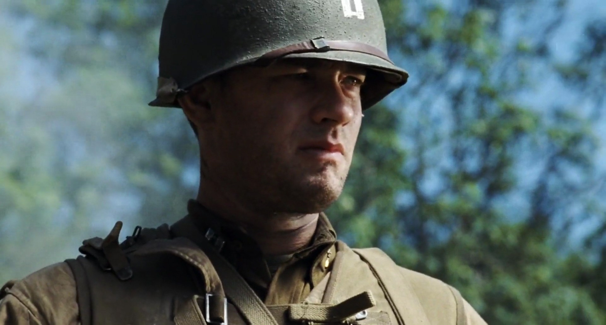
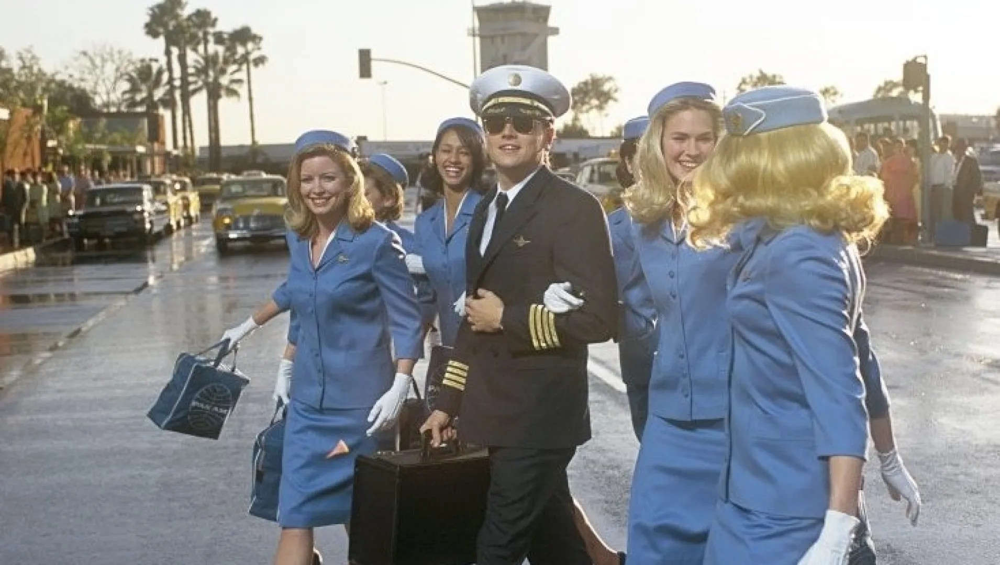
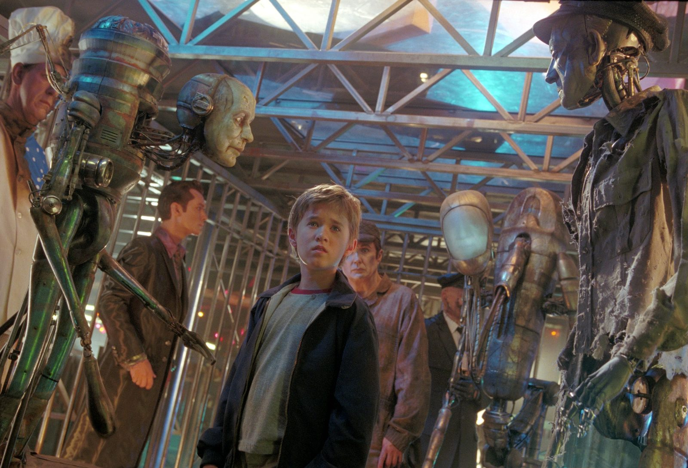

Стивен Спилберг
18.12.1946
Цинциннати, США
Стивен Спилберг родился в 1946 году в Цинциннати в семье инженера-электрика и профессиональной пианистки.
Из-за частых переездов в детстве он чувствовал себя чужим, что позже отразилось в темах его фильмов.
У него восемь детей (трое родных и пятеро приемных). Его брак с актрисой Кейт Кэпшоу продолжается с 1991 года.
Спилберг — мастер зрелищного развлекательного кино с невероятным чувством темпа и визуального рассказа.
Его ключевые черты: крупные планы изумлённых лиц, яркий свет в тёмных сценах, приглушённые радужные цвета и тема хрупкости детства,
столкнувшегося с внешней угрозой. Любимые жанры: научная фантастика, приключенческий фильм, военная драма и психологический триллер.
Известные фильмы

Челюсти
1975 год

Парк юрского периода
1993 год

Спасти рядового Райана
1998 год
Терминал
2004 год

Поймай меня, если сможешь
2002 год

Искусственный разум
2001 год
Награды

Премия «Золотой глобус»
3 победы
6 номинаций

Премия «Оскар»
2 победы
6 номинаций

Каннский кинофестиваль
1 победа
4 номинаций